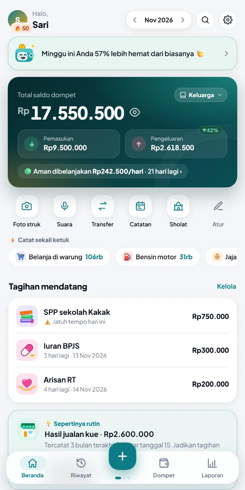
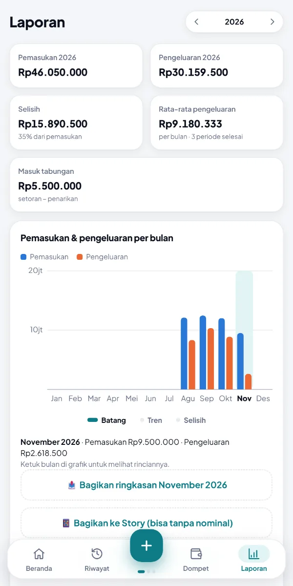
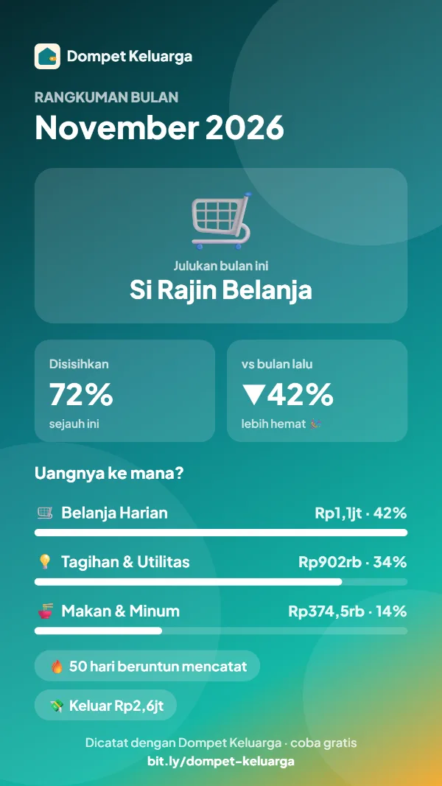

Dompet Keluarga
Dompet Keluarga
Uang keluarga akur, sampai gajian berikutnya.
Anda dan pasangan mencatat dari HP masing-masing, angkanya langsung sama, dan aplikasi memberi tahu berapa yang aman dibelanjakan tiap hari. Gratis, tanpa iklan, dan semua catatan tersimpan di Google Drive Anda, bukan di server orang lain.
Mode coba berisi data contoh satu keluarga. Tidak perlu login, tidak perlu pasang apa pun.

Kenapa Dompet Keluarga?
Aplikasi keuangan biasanya dibuat untuk satu orang. Yang ini dibuat untuk rumah tangga.
Datanya milik Anda
Aplikasi ini tidak punya server. Semua catatan ada di spreadsheet di Google Drive Anda, bisa dibuka di Google Sheets atau diunduh ke Excel kapan saja.
Dicatat bersama
Undang pasangan atau anggota keluarga lewat email atau link WhatsApp. Semua melihat saldo yang sama dan tahu siapa mencatat apa.
Gratis, tanpa iklan
Tidak ada langganan dan tidak ada iklan. Cukup akun Google yang sudah Anda punya.
Lihat tampilannya
Tangkapan layar asli dari mode coba, dengan data contoh satu keluarga.


Mencatat tidak lagi merepotkan
Pilih cara yang paling cepat untuk Anda. Aplikasi mengisi sisanya.
Catat dengan suara
"Makan siang 35 ribu pakai tunai, parkir 5 ribu", dan dua transaksi langsung tercatat.
Foto struk
Nominal, kategori, dan tanggal terbaca dari foto. Fotonya tersimpan sebagai bukti.
Ketik cepat
Tulis bakso 25rb gopay, tekan Enter, selesai. Paham rb, jt, goceng, ceban.
Tetap jalan tanpa sinyal
Catat saat offline, dan transaksinya terkirim sendiri begitu ada sinyal.
Lewat Telegram
Kirim pesan atau foto struk ke bot, dan langsung masuk ke buku keluarga.
Tagihan rutin
Listrik, internet, SPP, cicilan muncul di Beranda menjelang jatuh tempo.
Beberapa buku
Pisahkan keuangan Keluarga, Pribadi, dan Usaha, masing-masing bisa dibagikan ke orang berbeda.
Kunci PIN & samarkan
Kunci dengan PIN atau sidik jari, dan samarkan angka saat HP dipinjam orang lain.
Uangnya cukup sampai gajian?
Bukan sekadar catatan. Aplikasi membantu Anda memutuskan.
Aman dibelanjakan per hari
Berapa yang aman dipakai tiap hari sampai gajian, sudah dikurangi tagihan yang belum dibayar.
Anggaran & amplop
Batas belanja per kategori, peringatan di 80%, dan sisa bulan ini bisa dibawa ke bulan depan.
Cek sebelum beli
Ketik barang dan harganya, lalu dapat penilaian: aman, harus berhemat, atau jangan dulu.
Tabungan bertarget
Dana darurat, liburan, umroh. Aplikasi menghitung berapa yang perlu disetor tiap bulan.
Utang, piutang & patungan
Catat siapa meminjam, bagi tagihan makan bareng, dan kirim pengingat lewat WhatsApp.
Laporan yang jujur
Dibanding bulan lalu di hari yang sama, tren per kategori, kekayaan bersih, dan kilas balik setahun.
Ikut tanggal gajian
Gajian tanggal 25? Semua ringkasan dan anggaran dihitung dari 25 sampai 24 bulan berikutnya.
Streak & tantangan
Hari tanpa belanja, 52 minggu menabung, dan lencana yang bisa dikejar berdua.
Mulai dalam 2 menit
Tidak perlu unduh dari Play Store. Aplikasi dibuka dari browser, lalu bisa dipasang ke layar utama HP.
Masuk dengan Google
Aplikasi membuat spreadsheet Dompet Keluarga di Google Drive Anda.
Isi saldo dompet
Pilih dompet yang Anda pakai (Tunai, BCA, GoPay, dan lain-lain), lalu isi saldonya. Boleh dikira-kira.
Undang keluarga
Kirim link undangan ke pasangan lewat WhatsApp. Mulai sekarang Anda mencatat berdua.
Pertanyaan yang sering muncul
Di mana data saya disimpan?
Di spreadsheet di Google Drive Anda sendiri. Aplikasi tidak punya server, dan hanya Anda serta orang yang Anda undang yang bisa membukanya. Aplikasi hanya bisa membuka file yang dibuatnya sendiri atau yang Anda pilih.
Apakah benar-benar gratis?
Ya. Tidak ada langganan dan tidak ada iklan. Fitur AI (baca struk lebih akurat, penjelasan laporan) memakai kunci Gemini gratis dari Google yang bisa Anda isi sendiri, dan sifatnya opsional.
Bisa dipakai di iPhone dan Android?
Bisa. Buka alamatnya di browser HP, lalu pasang ke layar utama supaya terasa seperti aplikasi biasa. Aplikasi memperbarui dirinya sendiri.
Bagaimana kalau ganti HP?
Masuk dengan akun Google yang sama, dan semua catatan langsung ada. Datanya memang tidak pernah disimpan di HP saja.
Apa bedanya mode coba dengan yang sungguhan?
Mode coba memakai data contoh yang disimpan di HP Anda saja, jadi bebas diubah atau dihapus. Fitur yang butuh Google Drive (foto struk, undang anggota, bot Telegram) baru aktif setelah masuk. Data contoh tidak ikut dipindahkan.
Lihat sendiri dalam satu menit
Buka mode coba, catat satu pengeluaran, lalu lihat Beranda dan Laporan berubah.